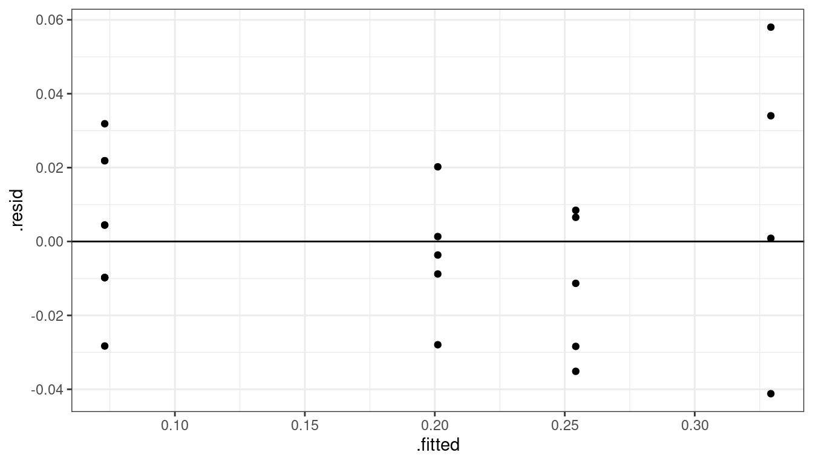

SLR Case Study
David Gerard
2021-08-05
Learning Objectives
- Provide an example of how I would approach a simple linear regression task.
Data Analysis
We will use the Plutonium data from Section 3.11 of the book:
library(tidyverse) library(broom) plut <- tribble(~act, ~alpha, 0.150, 20, 0.004, 0, 0.069, 10, 0.030, 5, 0.011, 0, 0.004, 0, 0.041, 5, 0.109, 20, 0.068, 10, 0.009, 0, 0.009, 0, 0.048, 10, 0.006, 0, 0.083, 20, 0.037, 5, 0.039, 5, 0.132, 20, 0.004, 0, 0.006, 0, 0.059, 10, 0.051, 10, 0.002, 0, 0.049, 5, 0.106, 0 )The two variables are
act: A measure of the plutonium activity, measured in picocuries (one trillionth of a curie) per gram.alpha: The intensity of alpha particle strikes in counts per second.
The first thing you should always do is plot your data.
qplot(x = alpha, y = act, data = plut)There is one clear outlier. If I was collaborating with someone who collected the data, I would ask them about that point. The authors did so and it was determined that lab conditions were not properly maintained for that observation, so we’ll remove it.
plut <- filter(plut, !(alpha == 0 & act > 0.1)) qplot(x = alpha, y = act, data = plut)Let’s use a smoother to explore the relationship.
plut <- filter(plut, !(alpha == 0 & act > 0.1)) qplot(x = alpha, y = act, data = plut) + geom_smooth(se = FALSE)The relationship looks fairly linear. Let’s try a linear regression and explore the residuals.
lmout <- lm(act ~ alpha, data = plut) aout <- augment(lmout) qplot(x = .fitted, y = .resid, data = aout) + geom_hline(yintercept = 0)We have a non-constant variance issue. What I would do now would depend on the goal of the research. If my collaborators were interested in just the relationship between alpha counts and activity level, then I would use sandwich estimation of the standard errors.
library(sandwich) library(lmtest) cout <- coeftest(x = lmout, vcov. = vcovHC(x = lmout)) tidy(cout, conf.int = TRUE)## # A tibble: 2 × 7 ## term estimate std.error statistic p.value conf.low conf.high ## <chr> <dbl> <dbl> <dbl> <dbl> <dbl> <dbl> ## 1 (Intercept) 0.00703 0.00242 2.91 0.00841 0.00200 0.0121 ## 2 alpha 0.00554 0.000705 7.86 0.000000109 0.00407 0.00700I would conclude that we have strong evidence of a linear association between alpha count and plutonium activity (\(p < 0.001\), \(n = 23\)). Readings of 10 more counts are estimated to have activities about 0.055 pCi/g higher (95% CI of 0.041 pCi/g to 0.070 pCi/g higher).
However, if the goal is to provide prediction, along with interval estimates of those predictions, then I would try working a little harder. First, a log-transformation of \(y\) might help, but we couldn’t do a log transformation of \(x\) because we have 0 counts. Adding a small constant doesn’t seem to help much
qplot(x = log(alpha + 1), y = log(act), data = plut) + geom_smooth(se = FALSE)
We could try a different transformation, like a square root:
qplot(x = sqrt(alpha), y = sqrt(act), data = plut) + geom_smooth(se = FALSE)That does seem to work better.
Let’s fit using square root transformations:
plut <- mutate(plut, sq_act = sqrt(act), sq_alpha = sqrt(alpha)) lm_sq <- lm(sq_act ~ sq_alpha, data = plut) lm_sq## ## Call: ## lm(formula = sq_act ~ sq_alpha, data = plut) ## ## Coefficients: ## (Intercept) sq_alpha ## 0.0730 0.0573aout <- augment(lm_sq) qplot(x = .fitted, y = .resid, data = aout) + geom_hline(yintercept = 0)
That seems to work well. Let’s do an overall \(F\)-test to see if the linear model is insufficient.
lm_full <- lm(sq_act ~ as.factor(sq_alpha), data = plut) anova(lm_sq, lm_full)## Analysis of Variance Table ## ## Model 1: sq_act ~ sq_alpha ## Model 2: sq_act ~ as.factor(sq_alpha) ## Res.Df RSS Df Sum of Sq F Pr(>F) ## 1 21 0.0129 ## 2 19 0.0114 2 0.00154 1.29 0.3This says that we do not have any evidence that the linear model is insufficient (p = 0.3).
Because square roots are completely uninterpretable, I would transform back to the original scale before showing anything to my client.
First, let’s calculate prediction intervals for the range of the \(x\)-values. Make sure you create the transformed \(x\)-variable.
newdf <- data.frame(alpha = seq(min(plut$alpha), max(plut$alpha), length.out = 200)) newdf <- mutate(newdf, sq_alpha = sqrt(alpha)) predict(object = lm_sq, newdata = newdf, interval = "prediction") %>% cbind(newdf) -> newdf str(newdf)## 'data.frame': 200 obs. of 5 variables: ## $ fit : num 0.073 0.0912 0.0987 0.1045 0.1093 ... ## $ lwr : num 0.019 0.0376 0.0452 0.0511 0.0561 ... ## $ upr : num 0.127 0.145 0.152 0.158 0.163 ... ## $ alpha : num 0 0.101 0.201 0.302 0.402 ... ## $ sq_alpha: num 0 0.317 0.448 0.549 0.634 ...Now, let’s back transform the fit and the prediction intervals.
newdf <- mutate(newdf, fit = fit^2, lwr = lwr^2, upr = upr^2)I would work hard on a visualization to my client (see STAT 412/612)
library(latex2exp) ggplot() + geom_point(data = plut, mapping = aes(x = alpha, y = act)) + geom_line(data = newdf, mapping = aes(x = alpha, y = fit)) + geom_ribbon(data = newdf, mapping = aes(x = alpha, ymin = lwr, ymax = upr), alpha = 0.2, fill = "blue") + ggtitle(TeX("Estimated Model: $\\sqrt{y} = 0.073 + 0.057 \\sqrt{x} + noise$")) + xlab("Alpha Count Rate (#/sec)") + ylab("pCi/g")